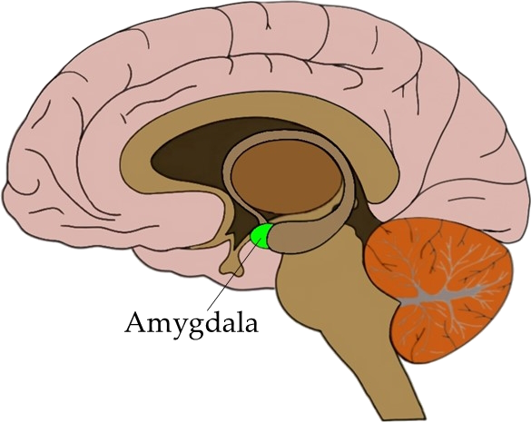

<!DOCTYPE html>
<html lang="en">
  <head>
    <meta charset="utf-8" />
    <meta name="viewport" content="width=device-width, initial-scale=1.0, maximum-scale=1.0, user-scalable=no" />

    <title>Dealing with mental illness</title>
    <link rel="stylesheet" href="./css/reveal.css" />
    <link rel="stylesheet" href="./_assets/osmi" id="theme" />
    <link href='https://fonts.googleapis.com/css?family=Source+Sans+Pro:300,400' rel='stylesheet' type='text/css'>
    <link rel="stylesheet" href="./css/highlight/zenburn.css" />
    <link rel="stylesheet" href="./css/print/paper.css" type="text/css" media="print" />
    <link rel="stylesheet" href="./_assets/theme/osmi.css" />

  </head>
  <body>
    <div class="reveal">
      <div class="slides"><section  data-markdown><script type="text/template">

<!-- .slide: class="small-p" -->
## Dealing with mental illness
### Or: How I learned to dislike myself less

J.D. Flynn, Technical Architect

@JDDoesDev • Slack(s): Dorf

<aside class="notes"><ul>
<li>Welcome everyone!</li>
<li>Thank you for having me</li>
</ul>
</aside></script></section><section  data-markdown><script type="text/template">

## Disclaimers:
* ### NOT a doctor
* ### NOT a lawyer
* ### Possible naughty language
* ### It's about to get personal

<aside class="notes"><p>I also like to start off by covering my ass</p>
<p>Disclaimer:</p>
<ul>
<li>I&#39;m not a mental health professional</li>
<li>I&#39;m not a legal professional</li>
<li>I also tend to swear without thinking about it... sorry</li>
<li>Also, I&#39;m going to go into quite a bit of detail</li>
</ul>
</aside></script></section><section  data-markdown><script type="text/template">

# Why are we here?
## Today, that is

<aside class="notes"><ul>
<li>Hopefully we aren&#39;t going to spark a philosophical debate that results in an existential crisis for someone.</li>
<li>I&#39;m here to talk WITH you about something very important to me, and hopefully to you</li>
<li>I hope you&#39;re here because you want to take part in a conversation, or at least learn something</li>
<li>Also here to tell story<ul>
<li>Hope it helps someone the way another person&#39;s story helped me</li>
</ul>
</li>
</ul>
</aside></script></section><section  data-markdown><script type="text/template">
<!-- .slide: data-background-color="#888f79" -->

# So let's have a conversation!
## You first

<aside class="notes"><h3 id="do-the-fragment-">DO THE FRAGMENT!</h3>
<ul>
<li>You&#39;re going to learn a lot about me</li>
<li>I like to have an idea of who I&#39;m talking with</li>
<li>How many of you are developers, designers, or anything directly related to making sites or programming?</li>
<li>How many of you are project managers, owners, or account managers or similar</li>
<li>How many of you are in HR?</li>
<li>How many of you are in upper management? Managers, Presidents, CEOs, etc.</li>
</ul>
</aside></script></section><section  data-markdown><script type="text/template">

# Who is this guy?

<aside class="notes"><ul>
<li>Drupal/PHP Developer for 6 years</li>
<li>Doing HTML since the 90s</li>
<li>BASIC around the same time</li>
<li>MidCamp Organizer</li>
<li>Drupal Chicago Meetup Organizer</li>
<li>Paramedic/EMT/firefighter for 10 years</li>
</ul>
</aside></script></section><section  data-markdown><script type="text/template">

## OH YEAH, I HAVE MENTAL ILLNESSES

</script></section><section  data-markdown><script type="text/template">
<!-- .slide: data-background-color="#008e7f" -->

# Major Depression

<aside class="notes"><ul>
<li>Clinical Depression: feelings of low self-worth or guilt and a reduced ability to enjoy life.<ul>
<li>symptoms that are present <em>every day</em> for at <em>least 2 weeks</em> - WebMD</li>
</ul>
</li>
</ul>
</aside></script></section><section  data-markdown><script type="text/template">
<!-- .slide: data-background-color="#008e7f" -->

# Anxiety Disorder


<aside class="notes"><ul>
<li>Anxiety: characterized by feelings of worry or fear that are strong enough to interfere with daily activities - Mayo Clinic<ul>
<li>Amygdala - lizard brain - fight || flight, feed || breed</li>
</ul>
</li>
</ul>
</aside></script></section><section  data-markdown><script type="text/template">
<!-- .slide: data-background-color="#008e7f" -->

# Post Traumatic Stress Disorder

<aside class="notes"><ul>
<li>PTSD: failure to recover after experiencing or witnessing a terrifying event - Mayo Clinic<ul>
<li>Give the &quot;RAM v HDD&quot; metaphor</li>
</ul>
</li>
</ul>
</aside></script></section><section  data-markdown><script type="text/template">
<!-- .slide: data-background-color="#008e7f" -->

# Attention Deficit Hyperactivity Disorder

<aside class="notes"><ul>
<li>ADHD: varying degrees of hyperactivity, impulsivity, and/or inattention that lead to difficulty in academic, emotional, and social functioning.<ul>
<li>When I was a kid, this was often looked at as being a bit odd or just needing to burn off some energy</li>
</ul>
</li>
</ul>
</aside></script></section><section  data-markdown><script type="text/template">

## I Haven't had mental illness very long
### (On paper)
</script></section><section  data-markdown><script type="text/template">

# How did I get here?

</script></section><section  data-markdown><script type="text/template">

# The dreaded STIGMA

</script></section><section  data-markdown><script type="text/template">
<!-- .slide: data-background-color="#008e7f" -->

## Introducing: My nemesis
<div class="mirror-wrap">
  
</div>

</script></section><section  data-markdown><script type="text/template">

## I accepted I needed help

<aside class="notes"><ul>
<li>The first thing was the hardest. I saw other people living happy lives and not going through the same things I was.</li>
<li>People didn&#39;t get as angry as I did as easily as I did.</li>
<li>People weren&#39;t affected by everyday things like I was and I had an epiphany that maybe everything else wasn&#39;t the issue. Maybe it was me?<ul>
<li>if everywhere you go smells like dog crap, maybe you should look at your own shoes</li>
</ul>
</li>
<li>For a lot of people (including myself) this is the hardest part</li>
<li>All the signs were there, but I couldn&#39;t see them</li>
</ul>
</aside></script></section><section  data-markdown><script type="text/template">
<!-- .slide: data-background-color="#675b53" -->

# Finally, I GOT TREATMENT!

<aside class="notes"><ul>
<li>I take medication<ul>
<li>Better living through chemistry</li>
</ul>
</li>
<li>I see a therapist</li>
<li>I find outlets<ul>
<li>active in the community through teaching and in the drupal community</li>
</ul>
</li>
<li>I start the conversation</li>
</ul>
</aside></script></section><section  data-markdown><script type="text/template">

# We're not alone!

<aside class="notes"><ul>
<li>I mean this in general, but more specifically in the tech community</li>
</ul>
</aside></script></section><section  data-markdown><script type="text/template">

## I was sick for a long time, but I refused to admit it

</script></section><section  data-markdown><script type="text/template">

## Now I'm stronger than fear, and you can be too

</script></section><section  data-markdown><script type="text/template">

## Let's talk more!
</script></section></div>
    </div>
    <footer>
      <span class="left">AWS Community Day - Chicago</span>
      <span class="right">@JDDoesDev</span>
    </footer>

    <script src="./lib/js/head.min.js"></script>
    <script src="./js/reveal.js"></script>

    <script>
      function extend() {
        var target = {};
        for (var i = 0; i < arguments.length; i++) {
          var source = arguments[i];
          for (var key in source) {
            if (source.hasOwnProperty(key)) {
              target[key] = source[key];
            }
          }
        }
        return target;
      }

      // Optional libraries used to extend on reveal.js
      var deps = [
        { src: './lib/js/classList.js', condition: function() { return !document.body.classList; } },
        { src: './plugin/markdown/marked.js', condition: function() { return !!document.querySelector('[data-markdown]'); } },
        { src: './plugin/markdown/markdown.js', condition: function() { return !!document.querySelector('[data-markdown]'); } },
        { src: './plugin/highlight/highlight.js', async: true, callback: function() { hljs.initHighlightingOnLoad(); } },
        { src: './plugin/zoom-js/zoom.js', async: true },
        { src: './plugin/notes/notes.js', async: true },
        { src: './plugin/math/math.js', async: true },
        {src: 'node_modules/revealjs-animated/dist/revealjs-animated.js', async: true}
      ];

      // default options to init reveal.js
      var defaultOptions = {
        controls: true,
        progress: true,
        history: true,
        center: true,
        transition: 'default', // none/fade/slide/convex/concave/zoom
        dependencies: deps
      };

      // options from URL query string
      var queryOptions = Reveal.getQueryHash() || {};

      var options = extend(defaultOptions, {}, queryOptions);
    </script>


    <script>
      Reveal.initialize(options);
    </script>
  </body>
</html>
